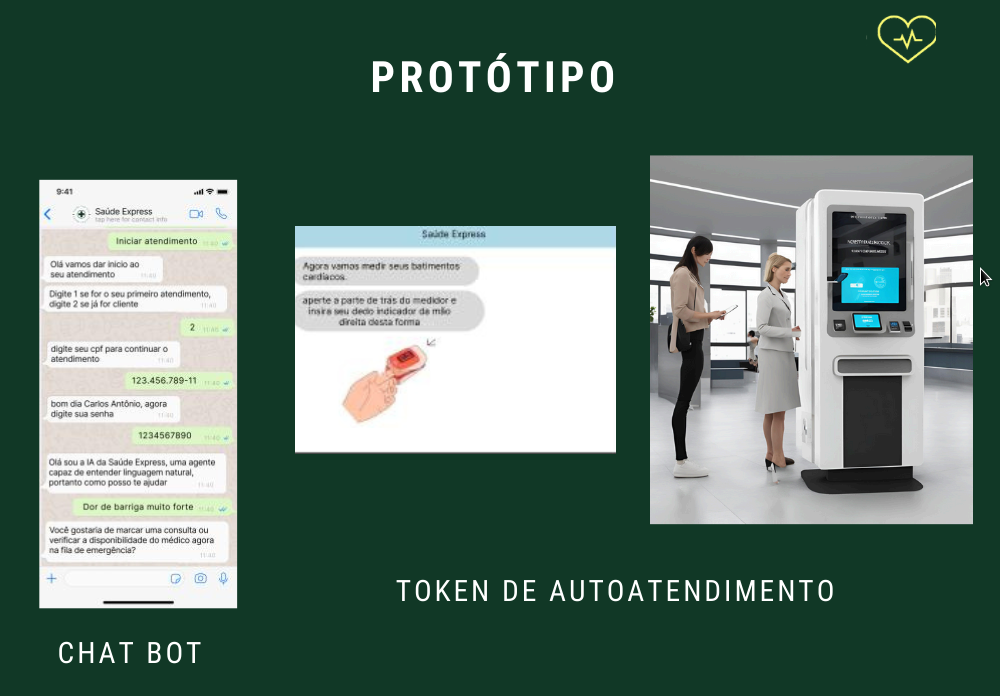

Seja bem-vindo ao Saúde Express, o seu sistema integrado com inteligência artifical para atendimento médico.

Explicação do sistema: trata-se de um aplicativo integrado à um serviço de IA como chat gpt que ajuda pacientes a terem mais informações sobre suas situações, tempo de espera, centros médicos mais próximos, como realizar auto-exames no totem que será integrado, para onde se digirir, filas, tele-atendimento com médicos, marcação de consultas dentre outras inúmeras possíbilidades.